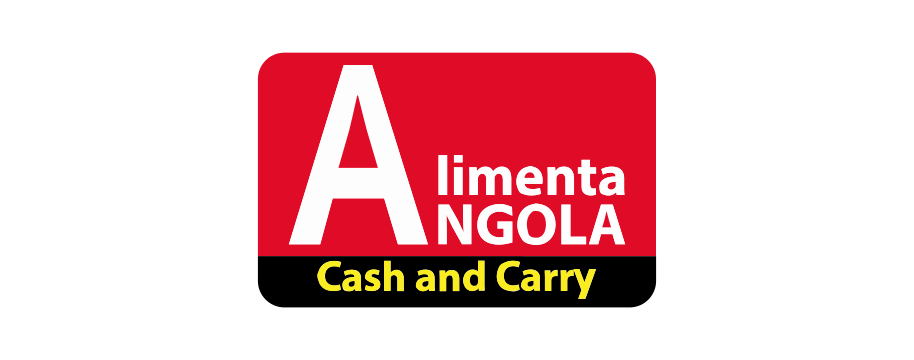

Portfolio
Proven experience in the field
Gas networks designed, installed and maintained by our team in factories, hotels, shopping centres and residential complexes, with safety as the rule at every stage.


Every project starts with a technical study
Before installing, we study the site, the consumption and the applicable standards. The network is safe from day one and ready to grow.
20+
Years of experience
300+
Installations per year
24/7
Technical support
Clients who trust us




Have a gas project?
Tell us what you need. Our technical team reviews your case and replies with a proposal.